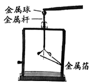
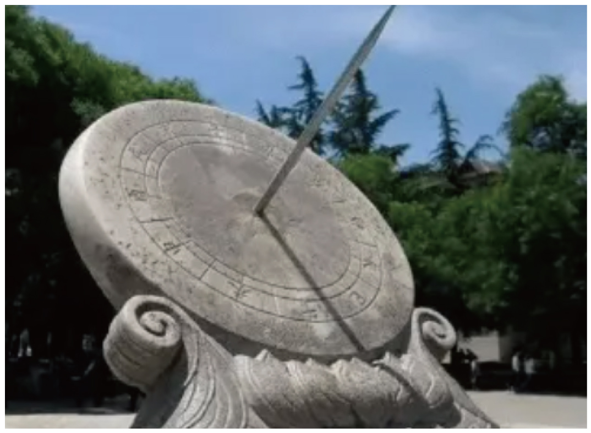
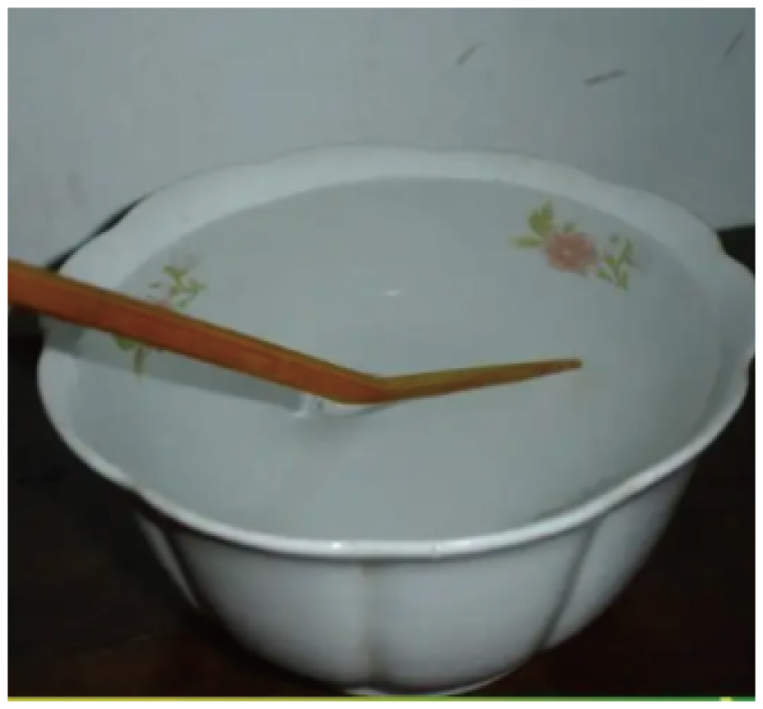
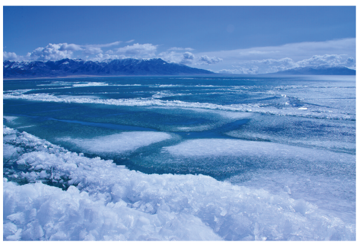
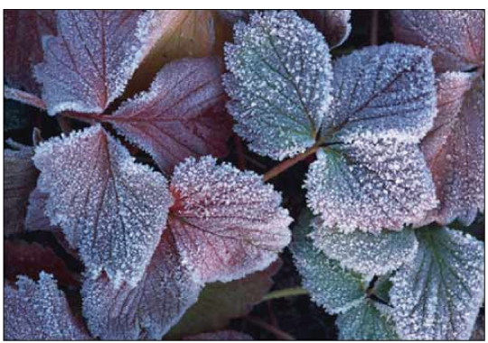
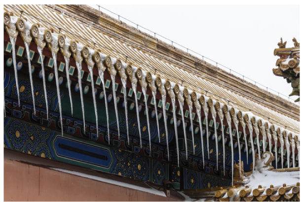
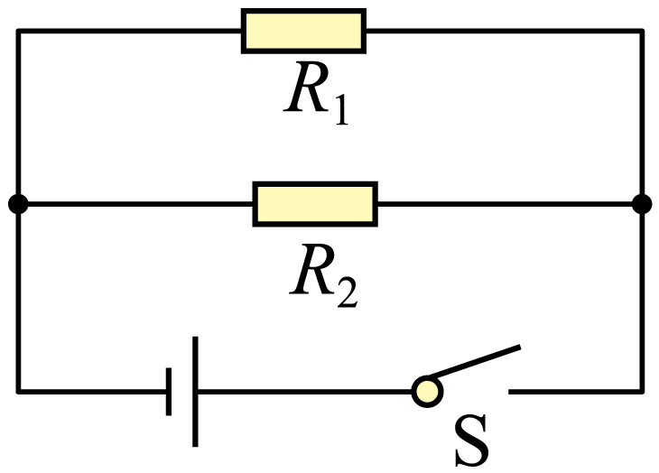

2022年北京市中考物理试题 · 选择题 第1、2、3、4、5题 · 对应解析
1. 如图所示，用毛皮摩擦过的橡胶棒接触验电器的金属球时，金属球验电器的两片金属箔之所以张开是由于（ ）

A. 同种电荷相互排斥B. 异种电荷相互吸引
C. 同种电荷相互吸引D. 异种电荷相互排斥
【答案】A
【解析】
【详解】用毛皮摩擦过的橡胶棒带负电，故用它去接触验电器的金属球时，验电器也带上负电，即验电器的金属球和两个金属箔片上都带上了负电，由于同种电荷相互排斥，故其两个金属箔片会张开，故A符合题意，BCD不符合题意。
故选A。
2. 图所示的光现象中，由于光的折射形成的是（ ）
A.

日晷上呈现针的影子B. 景物在镜中成像
景物在镜中成像C.  鸟巢在水中形成倒影D.
鸟巢在水中形成倒影D.

筷子好像在水面处弯折【答案】D
【解析】
【详解】A．影子的形成是由于光的直线传播，故A不符合题意；
B．景物在镜子中成的像是由于光的反射，故B不符合题意；
C．鸟巢在水中形成 倒影是由于光的反射，故C不符合题意；
倒影是由于光的反射，故C不符合题意；
D．筷子看起来弯折，是由于光从水中进入到空气中时，发生了折射，故D符合题意。
故选D。
3. 琴和瑟是我国传统的两种乐器，通过弹拨琴和瑟的弦使之发声。下列说法正确的是（ ）
A. 正在发声的琴弦，没有振动
B. 琴和瑟发出的声音，可以在真空中传播
C. 琴和瑟发出的声音音调相同时，它们的响度一定相同
D. 人们依据音色的不同，能区分出琴和瑟的声音
【答案】D
【解析】
【详解】A．一切发声的物体都在振动，所以正在发声的琴弦，在振动，故A错误；
B．声音的传播需要介质，声音不能在真空中传播，故B错误；
C．音调与振动频率有关，响度与振幅有关，琴和瑟发出的声音音调相同时，只能说明它们振动频率一样，但不能说明响度相同，故C错误；
D．琴和瑟材料与结构不同，发出声音的音色不同，所以可以根据音色来分出琴和瑟，故D正确。
故选D。
4. 图所示的物态变化实例中，由于熔化形成的是（ ）
A.

立春时节冰化成的水B. 白露时节草叶上的露珠C.

霜降时节枝头上的霜D.
冬至时节房檐上的冰挂【答案】A
【解析】
【详解】A．冰化成的水，固态变为液态，发生的是熔化现象，故A符合题意；
B．露珠是水蒸气遇冷液化形成的液体，故B不符合题意；
C．霜是水蒸气遇冷凝华形成的固体，故C不符合题意；
D．冰挂是水蒸气遇冷凝华形成的固体，故D不符合题意。
故选A。
5. 图所示的电路中，电阻阻值R1<R2。开关S闭合后，R1、R2两端的电压分别为U1、U2，通过R1、R2的电流分别为I1、I2。下列判断正确的是（ ）

A. U1>U2B. U1<U2C. I1>I2D. I1=I2
【答案】C
【解析】
【详解】AB．由图可知，两电阻并联，根据并联电路电压特点可知，U1=U2，故AB错误；
CD．两电阻两端的电压相等，I1R1=I2R2，由于R1<R2，所以I1>I2，故C正确，D错误。
故选C。